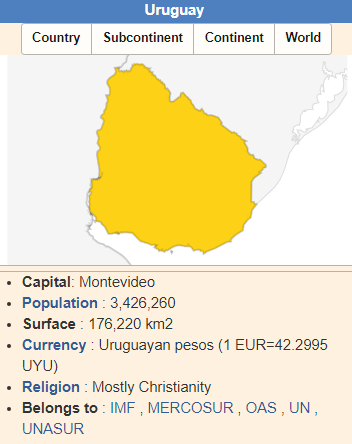

Montevideo - Chamber of Commerce

Uruguay, located in South America, has an area of 176,220 km2. Uruguay, with a population of 3,426,260 people, is in position 134 in the population table, made up of 196 countries and maintains a very low population density, 19 inhabitants per km2. Its capital is Montevideo and its currency is Uruguayan pesos.
Uruguay is the 82nd economy by GDP volume. Its public debt in 2022 was 40,058 million euros, with a debt of 59.31% of GDP. Its per capita debt is €11,691 euros per inhabitant. The last annual variation rate of the CPI published in Uruguay is from January 2024 and was 5.1%. There are some variables that can help you learn more if you are traveling to Uruguay or simply want to know more about the standard of living of its inhabitants. GDP per capita is a very good indicator of the standard of living and in the case of Uruguay, in 2022, it was €19,712 euros, which is why it is in 49th place out of the 196 countries in the GDP per capita ranking. Regarding the Human Development Index or HDI, which is prepared by the United Nations to measure the progress of a country and which ultimately shows us the standard of living of its inhabitants, it indicates that Uruguayans are in 59th place. If the reason for visiting Uruguay is business, it is useful to know that Uruguay is in 101st place out of the 190 that make up the Doing Business ranking, which classifies countries according to the ease they offer for doing business.
Regarding the Corruption Perception Index of the public sector in Uruguay, it has been 74 points, therefore, its inhabitants have a low level of perception of government corruption. In the tables at the bottom of the page you can expand information about the economy and demographics of Uruguay and if you want to see information about any other country you can do so from economy countries
+ Info
Fecha actual:
Número de visitas:
Número de visitas: